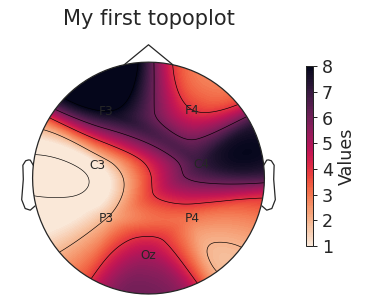
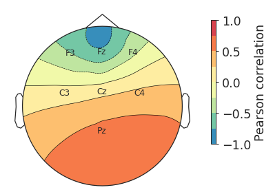

yasa.topoplot¶
-
yasa.topoplot(data, montage='standard_1020', vmin=None, vmax=None, mask=None, title=None, cmap=None, n_colors=100, cbar_title=None, cbar_ticks=None, figsize=4, 4, dpi=80, fontsize=14, **kwargs)[source]¶ Topoplot.
This is a wrapper around
mne.viz.plot_topomap().For more details, please refer to this example notebook.
New in version 0.4.1.
- Parameters
- data
pandas.Series A pandas Series with the values to plot. The index MUST be the channel names (e.g. [‘C4’, ‘F4’] or [‘C4-M1’, ‘C3-M2’]).
- montagestr
The name of the montage to use. Valid montages can be found at
mne.channels.make_standard_montage().- vmin, vmaxfloat
The minimum and maximum values of the colormap. If None, these will be defined based on the min / max values of
data.- mask
pandas.Series A pandas Series indicating the significant electrodes. The index MUST be the channel names (e.g. [‘C4’, ‘F4’] or [‘C4-M1’, ‘C3-M2’]).
- titlestr
The plot title.
- cmapstr
A matplotlib color palette. A list of color palette can be found at: https://seaborn.pydata.org/tutorial/color_palettes.html
- n_colorsint
The number of colors to discretize the color palette.
- cbar_titlestr
The title of the colorbar.
- cbar_tickslist
The ticks of the colorbar.
- figsizetuple
Width, height in inches.
- dpiint
The resolution of the plot.
- fontsizeint
Global font size of all the elements of the plot.
- **kwargsdict
Other arguments that are passed to
mne.viz.plot_topomap().
- data
- Returns
- fig
matplotlib.figure.Figure Matplotlib Figure
- fig
Examples
Plot all-positive values
>>> import yasa >>> import pandas as pd >>> data = pd.Series([4, 8, 7, 1, 2, 3, 5], ... index=['F4', 'F3', 'C4', 'C3', 'P3', 'P4', 'Oz'], ... name='Values') >>> fig = yasa.topoplot(data, title='My first topoplot')
Plot correlation coefficients (values ranging from -1 to 1)
>>> import yasa >>> import pandas as pd >>> data = pd.Series([-0.5, -0.7, -0.3, 0.1, 0.15, 0.3, 0.55], ... index=['F3', 'Fz', 'F4', 'C3', 'Cz', 'C4', 'Pz']) >>> fig = yasa.topoplot(data, vmin=-1, vmax=1, n_colors=8, ... cbar_title="Pearson correlation")
